GATE
KOMPUTER GENERASI I
▪ Ditemukan pada tahun 1940-1956
▪ Menggunakan Vacuum Tube sebagai
komponen digital
▪ Bahasa yang digunakan bahasamesin
(0 dan 1)
▪ Membutuhkan ruangan yang luas

KOMPUTER GENERASI II
▪ Digunakan antara tahun 1956-1963
▪ Menggunakan Transistor sebagai
komponen digitalnya
▪ Bahasa yang digunakan bahasa
assembly
▪ Ukuran tidak sebesar generasi 1
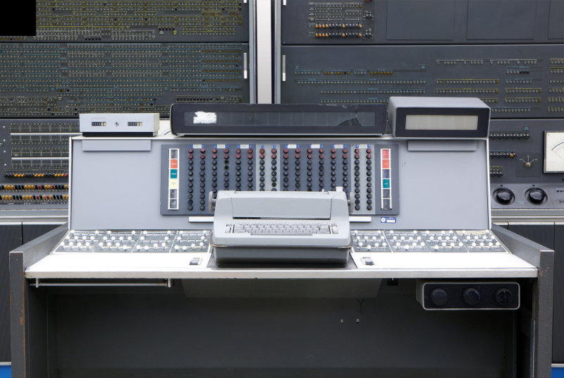
KOMPUTER GENERASI III
▪ Digunakan tahun 1964-1971
▪ Menggunakan IC (Integrated Circuits)
sebagai komponen digital
▪ Ukuran lebih kecil dari generasi 2

KOMPUTER GENERASI IV
▪ Digunakan pada tahun 1971-sekarang
▪ Menggunakan Mikroprosesorsebagai
komponen digital
▪ Sudah terdapat layar monitor yang
dapat menampilkan GUI
▪ Ukuran bervariasi
KOMPUTER GENERASI SELANJUTNYA
▪ Sekarang dan selanjutnya
▪ Berupa cloud computing dan AI
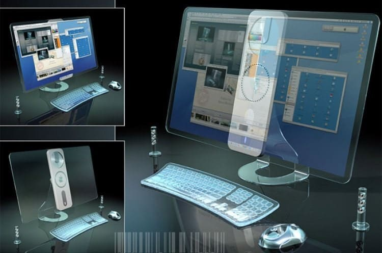
Logika gerbang (logic gate) adalah komponen dasar dari sirkuit digital yang digunakan untuk mengimplementasikan fungsi logika digital. Logika gerbang melakukan operasi logika pada satu atau lebih sinyal input dan menghasilkan sinyal output berdasarkan fungsi logika yang ditentukan.
Fungsi dari logika gerbang meliputi operasi dasar seperti AND, OR, NOT, XOR, dan sebagainya. Logika gerbang membentuk dasar dari rancangan dan implementasi sirkuit-sirkuit digital yang kompleks.
Tabel kebenaran (truth table) adalah tabel yang menggambarkan hasil dari operasi logika yang dilakukan oleh logika gerbang pada setiap kombinasi inputnya. Tabel ini memberikan gambaran lengkap tentang bagaimana logika gerbang berperilaku dan menghasilkan output berdasarkan kombinasi input tertentu.
Simbol-simbol umum untuk gerbang logika meliputi:
1. Gerbang AND: Simbolnya adalah titik (•) atau kadang-kadang ditunjukkan sebagai 'AND'.
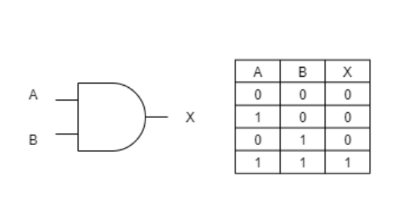
2. Gerbang OR: Simbolnya adalah tambah (+) atau kadang-kadang ditunjukkan sebagai 'OR'.
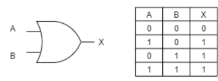
3. Gerbang NOT: Simbolnya adalah garis di atas input dengan output di bawahnya, dan ditandai dengan simbol "NOT" atau "~".
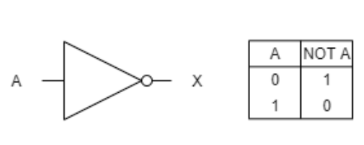
4. Gerbang XOR (Exclusive OR): Simbolnya adalah ⊕.
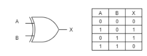
5. Gerbang NAND (NOT AND): Simbolnya adalah 'AND' diikuti oleh garis di atasnya.
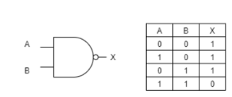
6. Gerbang NOR (NOT OR): Simbolnya adalah 'OR' diikuti oleh garis di atasnya.
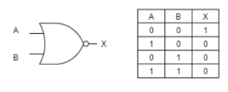
Gerbang logika membentuk dasar dari semua perangkat digital modern dan memainkan peran penting dalam perancangan dan pemahaman sirkuit digital.
Simbol Gerbang Logika
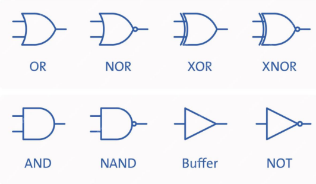
TRANSISTOR DAN SEMIKONDUKTOR
VACUUM TUBE
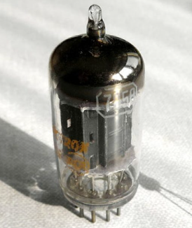
TRANSISTOR
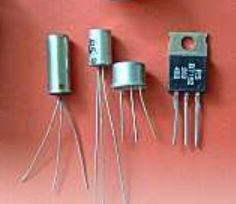
INTEGRATED CIRCUIT
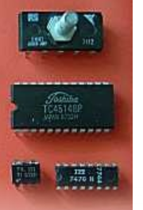